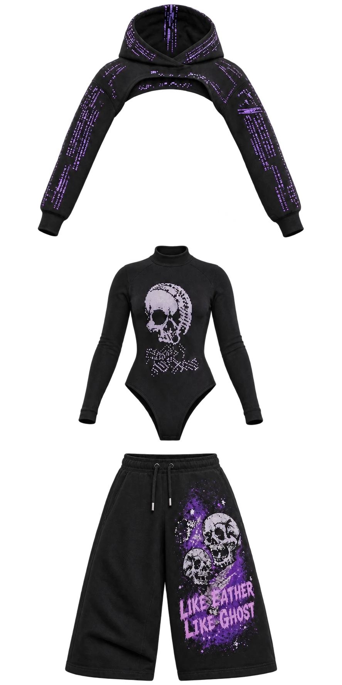

Evidence & stewardship
Preserve the history without rewriting it.
The provenance record distinguishes what surviving artifacts demonstrate, what the creator presently interprets, what belongs to third parties, and what has entered current project canon.
Verified provenance
A claim supported by an identified primary artifact, publication, commit, or contemporaneous record.
Authorial interpretation
The creator's present explanation of earlier work, preserved as interpretation until independently supported.
Canon authority
A project's approved source of truth. Historical influence does not override it.
AI use · A worked example
From a Wall of Eyes to an Ethics Hearing
Follow Dominique’s image selection, earlier Wattpad fiction and music associations through to an AI-assisted PIXIE scene. The record separates creative direction, interpretation and generated additions.
See how I use AI →Curriculum audit · Codex-assisted review
50 Ways to Leave Another — Curriculum & Rubric Audit
How I checked what the existing rubric assesses, separated learner self-checks from software verification, and identified limits before proposing a curriculum change.
Read the audit case study →Review draft · Human-centered production
The cost of deciding what to commission
An independent music release needs more than a recording. Artwork has to work across a cover, merchandise and physical editions before the business commits to production. Mayhem’s apparel development offers an adjacent example: AI can make the next paid request more specific. This record does not compare recorded-music production quality or costs.
Dominique reports receiving an AI assessment in under 15 minutes. It mapped apparel lines and artwork families, scoped audit and rebuild work, proposed production variants and embroidery digitizing, and set out proofing and handoff steps. In minutes, she had an itemized scope she could revise, compare and take to a specialist. That was a useful planning output; it was not inspected production art.
| Stage | Time known | Cash paid or estimated | Usable output | Checking and rework still needed |
|---|---|---|---|---|
| AI assessment | Under 15 minutes, founder-reported; subsequent checking time unmeasured. | AI planning estimates: 24 hours / $2,000; 48 hours / $4,400; 60 hours / $5,500. No Mayhem AI cash cost established here. | Editable scope, artwork families, proposed variants, digitizing, proofing and handoff plan. | Specialist file inspection; confirmed vendor price and calendar turnaround. Estimated labor hours are not delivery dates. |
| Vendor onboarding | June 2026 exchange; total founder hours and end-to-end elapsed time unverified. | ClothLink support reported cancellation and refund on June 26. Amount and posting unverified. | Intake requests for Tall measurements, product types and references; design feedback directed into Slack. No equivalent itemized assessment found in the correspondence described in the supplied summary. | Repeat context for the next provider and recover the conversation at exit. On June 27 support said the internal-workspace channel could not transfer ownership but the conversation could be saved. Recovery effort is unmeasured. |
| Commissioned production art | Delivery and revision hours unverified. | Fiverr: $867.31 charged − $633 refunded = $234.31 net across matched transactions. Illustrator payments: £630.55, not fully allocated by deliverable. | Paid artwork activity is recorded; accepted production-ready files and deliverable allocation are not established by these totals. | Inspect actual files, reconcile accepted deliverables and agree revision scope. The Like Father, Like Ghost logo price remains unverified. |
| Physical samples | Sample turnaround and correction time unverified. | $215.33 Printful sample spend, confirmed by Dominique. | Physical samples to inspect; payment does not establish an approved result. | Assess legibility, placement, substrate, color and embroidery at intended size; price any correction and further proof. |
What the assessment changed
The founder could separate quote preparation from production-art labor and physical proofing, then decide which work to commission. Fourthwall’s feedback on concept and placement supports the value of images for communicating direction. It does not establish print approval. The vendor exchange documented intake and exit; the supplied account of reviewed emails reports no comparable itemized scope. Neither record supports a savings multiple or ROI calculation.
The AI’s source-file geometry and print-tolerance claims still need file inspection and production judgment. Its IP-transfer language is a proposed term until a written agreement establishes it. An attractive mockup cannot settle any of those questions. Checking and correcting the assessment also takes human time; that time has not been measured here.
Separate experience shows the other side of the investment: Dominique reports $60 OpenAI spend on the first Veiled Dominion build, with repeated correction and rebuilding. That belongs to the game build, not Mayhem’s costs, and is not a measured estimate of artwork rework.
The next release decision
Use AI to prepare an editable brief and compare options. Reuse the existing quote-request prompt when its source is available; do not commission against an assumed reconstruction. Pay a specialist to inspect files, judge production constraints and deliver the agreed artwork variants. For Tall apparel, the factory still needs actual measurements, product types and references before assessing feasibility.
Then use a physical proof to decide whether the mark works at card-index size, in embroidery or on the intended garment. Budget for inspection, corrections and another proof if needed. Human-centered production means paying for the judgment and craft the release needs, with a clearer question before that money is committed.

Evidence boundary for owner review: This draft uses the owner-supplied case summary. The AI output Pasted text(20261109-221350).txt, input brief design-production-quote-prompt.md, underlying correspondence, transactions and production files were not available for independent inspection. Monetary figures retain their supplied currencies; paid amounts, refund reports and AI estimates are distinct. No raw correspondence, personal identifiers or transaction references are reproduced.
Current evidence register
| Material | Status | Boundary | Next evidence step |
|---|---|---|---|
| Lady Violet & Sebastian | Claimed original work | Not yet a public canonical archive | Inventory primary source files and dates |
| The RIM | Claimed original archive | Urban Alien Adventures genesis claim requires artifact links | Inventory ads, background media, drafts, and publication evidence |
| Battle the Beast | Transformative fan archive | No franchise expression transfers into original commercial IP | Complete archive citations and rights review |
| Violet's Revenge | Original project | Third-party music remains reference-only unless cleared | Maintain character, music, and asset registers |
| Veiled Dominion | Original game project | Engine repository controls current rules and canon | Record promotions from experiment to canon |
Private-record boundary
Social Security, housing, medical, benefits, banking, tax, credentials, private correspondence, unpublished contracts, and sensitive collaborator records are not public-repository evidence. They must remain in access-controlled private storage.